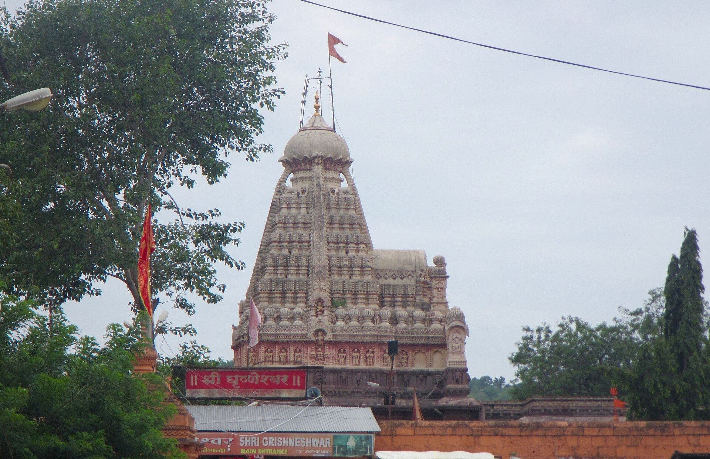

భారతదేశంలోని పవిత్ర ద్వాదశ జ్యోతిర్లింగాలలో పన్నెండవది మరియు యాత్రకు పరిపూర్ణతను చేకూర్చే మంగళకర క్షేత్రం శ్రీ ఘృష్ణేశ్వర జ్యోతిర్లింగం (దీనిని ఘుష్మేశ్వరుడు లేదా కుసుమేశ్వరుడు అని కూడా పిలుస్తారు).
ఈ దివ్యధామం మహారాష్ట్రలోని ఛత్రపతి శంభాజీనగర్ (పూర్వపు ఔరంగాబాద్) జిల్లా, వెరుల్ గ్రామంలో, ప్రపంచ ప్రసిద్ధ యునెస్కో వారసత్వ సంపద అయిన ఎల్లోరా గుహలకు కేవలం ఒక కిలోమీటరు దూరంలో ప్రశాంత వాతావరణంలో కొలువై ఉంది.
పరమశివుడు భక్తుల క్షమాగుణానికి, అనన్య శరణాగతికి కరిగిపోయి ప్రత్యక్షమైన కరుణామయ క్షేత్రంగా ఘృష్ణేశ్వరం ప్రసిద్ధి చెందింది. ఈ జ్యోతిర్లింగ దర్శనంతో ద్వాదశ జ్యోతిర్లింగ యాత్రా ఫలం సంపూర్ణమవుతుందని భక్తుల అచంచల విశ్వాసం.
శ్రీ ఘృష్ణేశ్వర జ్యోతిర్లింగ క్షేత్రం
ద్వాదశ జ్యోతిర్లింగ సమాప్తి ధామం • వెరుల్ (ఎల్లోరా), ఛత్రపతి శంభాజీనగర్, మహారాష్ట్ర

౧. పరిచయం
౨. క్షేత్ర పురాణ గాథ — ఘుష్మ అచంచల భక్తి & శివాలయ తీర్థం
శివ పురాణంలోని కోటిరుద్ర సంహిత ప్రకారం, దేవగిరి సమీపంలోని ఇలాపురంలో సుధర్ముడు అనే వేదవేత్త అయిన బ్రాహ్మణుడు తన భార్య సుదేహతో కలిసి నివసించేవాడు. సంతానం లేకపోవడంతో సుదేహ తన చెల్లెలు ఘుష్మను తన భర్తకు ఇచ్చి వివాహం జరిపించింది.
• ఘుష్మ పార్థివ లింగార్చన: ఘుష్మ పరమ శివభక్తురాలు. ఆమె ప్రతిరోజూ మట్టితో 101 చిన్న శివలింగాలను (పార్థివ లింగాలు) తయారుచేసి, భక్తితో రుద్రాభిషేకం చేసి, పూజ ముగిసిన తర్వాత సమీపంలోని సరోవరంలో నిమజ్జనం చేసేది. ఆ నిష్కామ భక్తికి మెచ్చిన శంకరుని అనుగ్రహంతో ఘుష్మకు ఒక తేజోవంతుడైన కుమారుడు జన్మించాడు.
• సుదేహ అసూయ & ఘోర కృతి: కాలక్రమేణా ఆ బాలుడు పెరిగి పెద్దవాడై వివాహం చేసుకున్నాడు. ఇది చూసిన సుదేహ మనస్సులో తీవ్రమైన అసూయా ద్వేషాలు రగిలిపోయాయి. ఒక రాత్రి బాలుడు నిద్రిస్తుండగా సుదేహ అతని గొంతు కోసి చంపి, ఘుష్మ నిత్యం లింగాలను నిమజ్జనం చేసే అదే చెరువులో శవాన్ని పారవేసింది.
• ఘుష్మ నిశ్చల భక్తి: మరుసటి ఉదయం కోడలు రక్తపు మడుగును చూసి హాహాకారాలు చేసింది. భర్త శోకసంద్రంలో మునిగిపోయాడు. కానీ ఘుష్మ మాత్రం కించిత్ కూడా చలించలేదు. "ఇచ్చినవాడు శివుడే, తీసుకున్నవాడు శివుడే; సమస్తమూ ఆ శంకరుని లీల" అంటూ ప్రశాంత చిత్తంతో నిత్యంలాగే 101 పార్థివ లింగాలకు పూజ ముగించి, నిమజ్జనం చేయడానికి సరోవర తీరానికి వెళ్ళింది.
• కుమారుని పునర్జీవనం & శివ సాక్షాత్కారం: లింగాలను నీటిలో నిమజ్జనం చేసి ఘుష్మ వెనుదిరగగానే, సరోవరం నుండి ఆమె కుమారుడు నవ్వుతూ 'అమ్మా!' అంటూ సజీవంగా నడుచుకుంటూ వచ్చాడు! అదే సమయంలో ఆకాశం నుండి ప్రచండమైన కాంతిపుంజం విరజిమ్ముతూ పరమశివుడు జ్యోతిర్లింగ స్వరూపంతో సాక్షాత్కరించాడు.
సుదేహ చేసిన పాపానికి ఆగ్రహించిన శివుడు ఆమెను త్రిశూలంతో సంహరించబోగా, ఘుష్మ పరమశివుని పాదాలపై పడి—"స్వామీ! నా అక్క అజ్ఞానంతో చేసింది, నా భక్తిని పరీక్షించడానికి నీవే ఆమెలో ఆ సంకల్పం కలిగించావు; దయచేసి ఆమెను క్షమించి అనుగ్రహించు" అని వేడుకుంది. ఘుష్మ యొక్క మహోన్నత క్షమాగుణానికి కరిగిపోయిన పరమశివుడు ఆమె కోరిక మేరకు ఆ ప్రదేశంలో ఆమె పేరు మీదుగా ఘుష్మేశ్వరుడు (ఘృష్ణేశ్వరుడు)గా శాశ్వతంగా కొలువుదీరాడు. ఆ సరోవరం శివాలయ తీర్థంగా ప్రసిద్ధి చెందింది.
• ఘుష్మ పార్థివ లింగార్చన: ఘుష్మ పరమ శివభక్తురాలు. ఆమె ప్రతిరోజూ మట్టితో 101 చిన్న శివలింగాలను (పార్థివ లింగాలు) తయారుచేసి, భక్తితో రుద్రాభిషేకం చేసి, పూజ ముగిసిన తర్వాత సమీపంలోని సరోవరంలో నిమజ్జనం చేసేది. ఆ నిష్కామ భక్తికి మెచ్చిన శంకరుని అనుగ్రహంతో ఘుష్మకు ఒక తేజోవంతుడైన కుమారుడు జన్మించాడు.
• సుదేహ అసూయ & ఘోర కృతి: కాలక్రమేణా ఆ బాలుడు పెరిగి పెద్దవాడై వివాహం చేసుకున్నాడు. ఇది చూసిన సుదేహ మనస్సులో తీవ్రమైన అసూయా ద్వేషాలు రగిలిపోయాయి. ఒక రాత్రి బాలుడు నిద్రిస్తుండగా సుదేహ అతని గొంతు కోసి చంపి, ఘుష్మ నిత్యం లింగాలను నిమజ్జనం చేసే అదే చెరువులో శవాన్ని పారవేసింది.
• ఘుష్మ నిశ్చల భక్తి: మరుసటి ఉదయం కోడలు రక్తపు మడుగును చూసి హాహాకారాలు చేసింది. భర్త శోకసంద్రంలో మునిగిపోయాడు. కానీ ఘుష్మ మాత్రం కించిత్ కూడా చలించలేదు. "ఇచ్చినవాడు శివుడే, తీసుకున్నవాడు శివుడే; సమస్తమూ ఆ శంకరుని లీల" అంటూ ప్రశాంత చిత్తంతో నిత్యంలాగే 101 పార్థివ లింగాలకు పూజ ముగించి, నిమజ్జనం చేయడానికి సరోవర తీరానికి వెళ్ళింది.
• కుమారుని పునర్జీవనం & శివ సాక్షాత్కారం: లింగాలను నీటిలో నిమజ్జనం చేసి ఘుష్మ వెనుదిరగగానే, సరోవరం నుండి ఆమె కుమారుడు నవ్వుతూ 'అమ్మా!' అంటూ సజీవంగా నడుచుకుంటూ వచ్చాడు! అదే సమయంలో ఆకాశం నుండి ప్రచండమైన కాంతిపుంజం విరజిమ్ముతూ పరమశివుడు జ్యోతిర్లింగ స్వరూపంతో సాక్షాత్కరించాడు.
సుదేహ చేసిన పాపానికి ఆగ్రహించిన శివుడు ఆమెను త్రిశూలంతో సంహరించబోగా, ఘుష్మ పరమశివుని పాదాలపై పడి—"స్వామీ! నా అక్క అజ్ఞానంతో చేసింది, నా భక్తిని పరీక్షించడానికి నీవే ఆమెలో ఆ సంకల్పం కలిగించావు; దయచేసి ఆమెను క్షమించి అనుగ్రహించు" అని వేడుకుంది. ఘుష్మ యొక్క మహోన్నత క్షమాగుణానికి కరిగిపోయిన పరమశివుడు ఆమె కోరిక మేరకు ఆ ప్రదేశంలో ఆమె పేరు మీదుగా ఘుష్మేశ్వరుడు (ఘృష్ణేశ్వరుడు)గా శాశ్వతంగా కొలువుదీరాడు. ఆ సరోవరం శివాలయ తీర్థంగా ప్రసిద్ధి చెందింది.
౩. ద్వాదశ జ్యోతిర్లింగ స్తోత్ర ప్రశస్తి
జగద్గురు శ్రీ ఆదిశంకరాచార్యులు తమ ద్వాదశ జ్యోతిర్లింగ స్తోత్రంలో ఘృష్ణేశ్వర స్వామిని ఇలా కొనియాడారు:
"ఇలాపురే రమ్యవిశాలకేఽస్మిన్ సముల్లసంతం చ జగద్వరేణ్యమ్ |
వందే మహోదారతరస్వభావం ఘృశ్ణేశ్వరాఖ్యం శరణం ప్రపద్యే ||"
అత్యంత విశాలమైన ఇలాపుర క్షేత్రంలో జగత్ పూజితుడై, క్షమ మరియు ఔదార్యానికి మారుపేరైన పరమోదార స్వభావుడైన శ్రీ ఘృష్ణేశ్వర స్వామికి ప్రణమిల్లుతున్నాను అని దీని భావం.
"ఇలాపురే రమ్యవిశాలకేఽస్మిన్ సముల్లసంతం చ జగద్వరేణ్యమ్ |
వందే మహోదారతరస్వభావం ఘృశ్ణేశ్వరాఖ్యం శరణం ప్రపద్యే ||"
అత్యంత విశాలమైన ఇలాపుర క్షేత్రంలో జగత్ పూజితుడై, క్షమ మరియు ఔదార్యానికి మారుపేరైన పరమోదార స్వభావుడైన శ్రీ ఘృష్ణేశ్వర స్వామికి ప్రణమిల్లుతున్నాను అని దీని భావం.
౪. చారిత్రక పరిణామం — భోసలే వంశం & అహల్యాబాయి హోల్కర్ వైభవం
ఘృష్ణేశ్వర దేవాలయం శతాబ్దాల తరబడి శైవ భక్తికి పునాదిగా నిలిచింది:
• మాలోజీ రాజే భోసలే పునరుద్ధరణ (16వ శతాబ్దం): ఛత్రపతి శివాజీ మహారాజు ముత్తాత అయిన మాలోజీ రాజే భోసలే వెరుల్ గ్రామ పటేల్గా ఉండేవారు. ఆయన ఘృష్ణేశ్వర స్వామికి పరమ భక్తుడు. స్వామివారి అనుగ్రహంతో లభించిన నిధిని ఉపయోగించి ఆయన ఆలయాన్ని, పవిత్ర శివాలయ సరోవరాన్ని పునర్నిర్మించారు.
• రాజమాత అహల్యాబాయి హోల్కర్ నిర్మాణం (18వ శతాబ్దం): ఢిల్లీ సుల్తానుల దండయాత్రలలో ధ్వంసమైన ఈ పుణ్యక్షేత్రానికి పూర్వ వైభవాన్ని తెస్తూ, ఇండోర్ మహారాణి పుణ్యశ్లోక అహల్యాబాయి హోల్కర్ ఎర్రటి రాతితో ప్రస్తుతం దర్శనమిచ్చే అత్యంత సుందరమైన ఆలయాన్ని సర్వాంగ సుందరంగా నిర్మించారు.
• మాలోజీ రాజే భోసలే పునరుద్ధరణ (16వ శతాబ్దం): ఛత్రపతి శివాజీ మహారాజు ముత్తాత అయిన మాలోజీ రాజే భోసలే వెరుల్ గ్రామ పటేల్గా ఉండేవారు. ఆయన ఘృష్ణేశ్వర స్వామికి పరమ భక్తుడు. స్వామివారి అనుగ్రహంతో లభించిన నిధిని ఉపయోగించి ఆయన ఆలయాన్ని, పవిత్ర శివాలయ సరోవరాన్ని పునర్నిర్మించారు.
• రాజమాత అహల్యాబాయి హోల్కర్ నిర్మాణం (18వ శతాబ్దం): ఢిల్లీ సుల్తానుల దండయాత్రలలో ధ్వంసమైన ఈ పుణ్యక్షేత్రానికి పూర్వ వైభవాన్ని తెస్తూ, ఇండోర్ మహారాణి పుణ్యశ్లోక అహల్యాబాయి హోల్కర్ ఎర్రటి రాతితో ప్రస్తుతం దర్శనమిచ్చే అత్యంత సుందరమైన ఆలయాన్ని సర్వాంగ సుందరంగా నిర్మించారు.
౫. ఎర్రరాతి శిల్పకళ & పంచతల శిఖర నిర్మాణం
• ఎర్రరాతి శిల్ప సౌందర్యం: ఆలయం ఎర్రటి బసాల్ట్ రాతితో దక్షిణ భారతీయ మరియు మాల్వా నిర్మాణ శైలుల అద్భుత కలయికతో నిర్మించబడింది.
• ఐదు అంతస్తుల గోపురం (పంచతల శిఖరం): ఆలయ శిఖరం ఐదు అంతస్తులుగా ఆకాశాన్ని తాకుతూ, బంగారు కలశంతో మెరిసిపోతుంది. గోడలపై పురాణ గాథలు, దేవీదేవతల రూపాలు, నాట్య భంగిమలు విలక్షణంగా చెక్కబడ్డాయి.
• సభామండపం & నంది విగ్రహం: 24 సుందర రాతి స్తంభాలపై నిలిచిన విశాలమైన సభామండపం, గర్భగుడికి ఎదురుగా ప్రతిష్ఠించిన గంభీరమైన రాతి నందీశ్వరుడు భక్తులను విశేషంగా ఆకర్షిస్తాయి.
• గర్భగుడి దర్శన విధి: సాంప్రదాయక పద్ధతిలో పురుషులు చొక్కా విప్పి, ధోవతి ధరించి గర్భగుడిలోకి ప్రవేశించి స్వయంగా జ్యోతిర్లింగాన్ని స్పర్శించి అభిషేకం చేసుకోవచ్చు.
• ఐదు అంతస్తుల గోపురం (పంచతల శిఖరం): ఆలయ శిఖరం ఐదు అంతస్తులుగా ఆకాశాన్ని తాకుతూ, బంగారు కలశంతో మెరిసిపోతుంది. గోడలపై పురాణ గాథలు, దేవీదేవతల రూపాలు, నాట్య భంగిమలు విలక్షణంగా చెక్కబడ్డాయి.
• సభామండపం & నంది విగ్రహం: 24 సుందర రాతి స్తంభాలపై నిలిచిన విశాలమైన సభామండపం, గర్భగుడికి ఎదురుగా ప్రతిష్ఠించిన గంభీరమైన రాతి నందీశ్వరుడు భక్తులను విశేషంగా ఆకర్షిస్తాయి.
• గర్భగుడి దర్శన విధి: సాంప్రదాయక పద్ధతిలో పురుషులు చొక్కా విప్పి, ధోవతి ధరించి గర్భగుడిలోకి ప్రవేశించి స్వయంగా జ్యోతిర్లింగాన్ని స్పర్శించి అభిషేకం చేసుకోవచ్చు.
౬. పరిసర ముఖ్య దర్శనీయ స్థలాలు
• ఎల్లోరా గుహలు (UNESCO World Heritage Site - 1 కి.మీ): మొత్తం 34 బౌద్ధ, హిందూ, జైన రాతి గుహల సమాహారం.
• కైలాస దేవాలయం (గుహ సంఖ్య 16): ప్రపంచంలోనే ఒకే కొండరాతిని పైనుండి క్రిందికి తొలిచి నిర్మించిన అసమాన శిల్పకళా అద్భుతం.
• శివాలయ తీర్థం: ఆలయానికి సమీపంలో ఘుష్మ కుమారుడు తిరిగి జీవించి వచ్చిన పుణ్య సరోవరం.
• భద్ర మారుతి దేవాలయం (ఖుల్దాబాద్ - 4 కి.మీ): భారతదేశంలో అత్యంత అరుదైన, శయన ముద్రలో (పడుకున్న భంగిమలో) కొలువై ఉన్న శ్రీ హనుమంతుని ఆలయం.
• దౌలతాబాద్ కోట (దేవగిరి - 15 కి.మీ): మధ్యయుగపు అత్యంత దుర్భేద్యమైన చారిత్రక కొండ కోట.
• కైలాస దేవాలయం (గుహ సంఖ్య 16): ప్రపంచంలోనే ఒకే కొండరాతిని పైనుండి క్రిందికి తొలిచి నిర్మించిన అసమాన శిల్పకళా అద్భుతం.
• శివాలయ తీర్థం: ఆలయానికి సమీపంలో ఘుష్మ కుమారుడు తిరిగి జీవించి వచ్చిన పుణ్య సరోవరం.
• భద్ర మారుతి దేవాలయం (ఖుల్దాబాద్ - 4 కి.మీ): భారతదేశంలో అత్యంత అరుదైన, శయన ముద్రలో (పడుకున్న భంగిమలో) కొలువై ఉన్న శ్రీ హనుమంతుని ఆలయం.
• దౌలతాబాద్ కోట (దేవగిరి - 15 కి.మీ): మధ్యయుగపు అత్యంత దుర్భేద్యమైన చారిత్రక కొండ కోట.
౭. నిత్య పూజా విశేషాలు & ఉత్సవాలు
• మహాశివరాత్రి బ్రహ్మోత్సవాలు: ఈ పర్వదినాన ఆలయంలో నిరంతర రుద్రాభిషేకాలు, చతుష్కాల పూజలు మరియు రథోత్సవం వైభవంగా సాగుతాయి.
• శ్రావణ మాసం: శ్రావణ సోమవారాల్లో వేలాదిగా భక్తులు పాదయాత్రలతో విచ్చేసి శివాలయ తీర్థ జలాలతో స్వామికి అభిషేకం చేస్తారు.
• కార్తీక పూర్ణిమ & త్రిపురారి పౌర్ణమి: ఆలయ ప్రాంగణంలో లక్ష దీపోత్సవం నిర్వహిస్తారు.
• శ్రావణ మాసం: శ్రావణ సోమవారాల్లో వేలాదిగా భక్తులు పాదయాత్రలతో విచ్చేసి శివాలయ తీర్థ జలాలతో స్వామికి అభిషేకం చేస్తారు.
• కార్తీక పూర్ణిమ & త్రిపురారి పౌర్ణమి: ఆలయ ప్రాంగణంలో లక్ష దీపోత్సవం నిర్వహిస్తారు.
౮. యాత్రికులకు సమాచారం & రవాణా మార్గాలు
భౌగోళిక స్థానం: వెరుల్ గ్రామం, ఖుల్దాబాద్ తాలూకా, ఛత్రపతి శంభాజీనగర్ జిల్లా, మహారాష్ట్ర (పిన్ కోడ్: 431102).
చేరుకునే మార్గాలు:
• విమాన మార్గం: ఛత్రపతి శంభాజీనగర్ విమానాశ్రయం (IXU) సమీప విమానాశ్రయం (సుమారు 35 కి.మీ). ఢిల్లీ, ముంబై, హైదరాబాద్, బెంగళూరుల నుండి విమానాలు అందుబాటులో ఉన్నాయి.
• రైలు మార్గం: ఛత్రపతి శంభాజీనగర్ (CSN) రైల్వే స్టేషన్ (సుమారు 30 కి.మీ). అలాగే మన్మాడ్ జంక్షన్ (సుమారు 95 కి.మీ) దేశంలోని అన్ని ప్రధాన రైల్వే మార్గాలతో అనుసంధానించబడి ఉంది.
• రోడ్డు మార్గం: ఛత్రపతి శంభాజీనగర్ సెంట్రల్ బస్ స్టాండ్ నుండి ఎల్లోరా/ఘృష్ణేశ్వరానికి ప్రతి అరగంటకు ఆర్టీసీ బస్సులు మరియు ప్రైవేట్ క్యాబ్లు నడుస్తాయి.
చేరుకునే మార్గాలు:
• విమాన మార్గం: ఛత్రపతి శంభాజీనగర్ విమానాశ్రయం (IXU) సమీప విమానాశ్రయం (సుమారు 35 కి.మీ). ఢిల్లీ, ముంబై, హైదరాబాద్, బెంగళూరుల నుండి విమానాలు అందుబాటులో ఉన్నాయి.
• రైలు మార్గం: ఛత్రపతి శంభాజీనగర్ (CSN) రైల్వే స్టేషన్ (సుమారు 30 కి.మీ). అలాగే మన్మాడ్ జంక్షన్ (సుమారు 95 కి.మీ) దేశంలోని అన్ని ప్రధాన రైల్వే మార్గాలతో అనుసంధానించబడి ఉంది.
• రోడ్డు మార్గం: ఛత్రపతి శంభాజీనగర్ సెంట్రల్ బస్ స్టాండ్ నుండి ఎల్లోరా/ఘృష్ణేశ్వరానికి ప్రతి అరగంటకు ఆర్టీసీ బస్సులు మరియు ప్రైవేట్ క్యాబ్లు నడుస్తాయి.
౯. దర్శన వేళలు & అధికారిక సమాచారం
సర్వదర్శన సమయాలు: ఉదయం 5:30 నుండి రాత్రి 9:00 వరకు.
(శ్రావణ మాసం మరియు మహాశివరాత్రి పర్వదినాల్లో రాత్రి వేళల్లో కూడా ప్రత్యేక దర్శనాలు ఉంటాయి; గర్భగుడి ప్రవేశానికి సాంప్రదాయ వస్త్రధారణ నిబంధనలు వర్తిస్తాయి).
అధికారిక వెబ్సైట్లు & పర్యాటక సమాచారం:
• మహారాష్ట్ర పర్యాటక అభివృద్ధి సంస్థ (MTDC) — ఘృష్ణేశ్వర ఆలయం
• ఛత్రపతి శంభాజీనగర్ జిల్లా అధికారిక పోర్టల్
(శ్రావణ మాసం మరియు మహాశివరాత్రి పర్వదినాల్లో రాత్రి వేళల్లో కూడా ప్రత్యేక దర్శనాలు ఉంటాయి; గర్భగుడి ప్రవేశానికి సాంప్రదాయ వస్త్రధారణ నిబంధనలు వర్తిస్తాయి).
అధికారిక వెబ్సైట్లు & పర్యాటక సమాచారం:
• మహారాష్ట్ర పర్యాటక అభివృద్ధి సంస్థ (MTDC) — ఘృష్ణేశ్వర ఆలయం
• ఛత్రపతి శంభాజీనగర్ జిల్లా అధికారిక పోర్టల్
౧౦. ఆధార గ్రంథాలు
• శివ పురాణం — కోటిరుద్ర సంహిత (ఘుశ్మేశ్వర ప్రాదుర్భావ అధ్యాయం)
• శ్రీ ఆదిశంకరాచార్య ప్రణీత ద్వాదశ జ్యోతిర్లింగ స్తోత్రం
• పద్మ పురాణం — పాతాళ ఖండం
• భారత పురావస్తు సర్వే (ASI) మరియు మహారాష్ట్ర పురావస్తు గెజిట్
• శ్రీ ఆదిశంకరాచార్య ప్రణీత ద్వాదశ జ్యోతిర్లింగ స్తోత్రం
• పద్మ పురాణం — పాతాళ ఖండం
• భారత పురావస్తు సర్వే (ASI) మరియు మహారాష్ట్ర పురావస్తు గెజిట్
౧౧. ముగింపు
శ్రీ ఘృష్ణేశ్వర జ్యోతిర్లింగ క్షేత్రం అనన్య భక్తికి, నిరుపమాన క్షమాగుణానికి పరమేశ్వరుడు ప్రసాదించిన శాశ్వత దివ్య వరప్రసాదం.
ఈ పన్నెండవ జ్యోతిర్లింగాన్ని దర్శించడంతో ద్వాదశ జ్యోతిర్లింగ యాత్ర పరిపూర్ణమై, భక్తుల సమస్త దుఃఖాలు, పాపాలు నశించి ఇహమందు సుఖశాంతులు, పరమందు పరమేశ్వర సాన్నిధ్యం సిద్ధిస్తాయి.
"సౌరాష్ట్రే సోమనాథం చ శ్రీశైలే మల్లికార్జునమ్ | ఉజ్జయిన్యాం మహాకాలమోంకారమమలేశ్వరమ్ ||
పరల్యాం వైద్యనాథం చ డాకిన్యాం భీమశంకరమ్ | సేతుబంధే తు రామేశం నాగేశం దారుకావనే ||
వారాణస్యాం తు విశ్వేశం త్రయంబకం గౌతమీతటే | హిమాలయే తు కేదారం ఘృశ్ణేశం చ శివాలయే ||
ఏతాని జ్యోతిర్లింగాని సాయం ప్రాతః పఠేన్నరః | సప్తజన్మకృతం పాపం స్మరణేన వినశ్యతి ||"
ద్వాదశ జ్యోతిర్లింగ భగవాన్ కీ జై! హర హర మహాదేవ్! ఓం నమః శివాయ!
ఈ పన్నెండవ జ్యోతిర్లింగాన్ని దర్శించడంతో ద్వాదశ జ్యోతిర్లింగ యాత్ర పరిపూర్ణమై, భక్తుల సమస్త దుఃఖాలు, పాపాలు నశించి ఇహమందు సుఖశాంతులు, పరమందు పరమేశ్వర సాన్నిధ్యం సిద్ధిస్తాయి.
"సౌరాష్ట్రే సోమనాథం చ శ్రీశైలే మల్లికార్జునమ్ | ఉజ్జయిన్యాం మహాకాలమోంకారమమలేశ్వరమ్ ||
పరల్యాం వైద్యనాథం చ డాకిన్యాం భీమశంకరమ్ | సేతుబంధే తు రామేశం నాగేశం దారుకావనే ||
వారాణస్యాం తు విశ్వేశం త్రయంబకం గౌతమీతటే | హిమాలయే తు కేదారం ఘృశ్ణేశం చ శివాలయే ||
ఏతాని జ్యోతిర్లింగాని సాయం ప్రాతః పఠేన్నరః | సప్తజన్మకృతం పాపం స్మరణేన వినశ్యతి ||"
ద్వాదశ జ్యోతిర్లింగ భగవాన్ కీ జై! హర హర మహాదేవ్! ఓం నమః శివాయ!
✦ సర్వే జనాః సుఖినో భవంతు • ఓం శ్రీ ఘృష్ణేశ్వరాయ నమః ✦